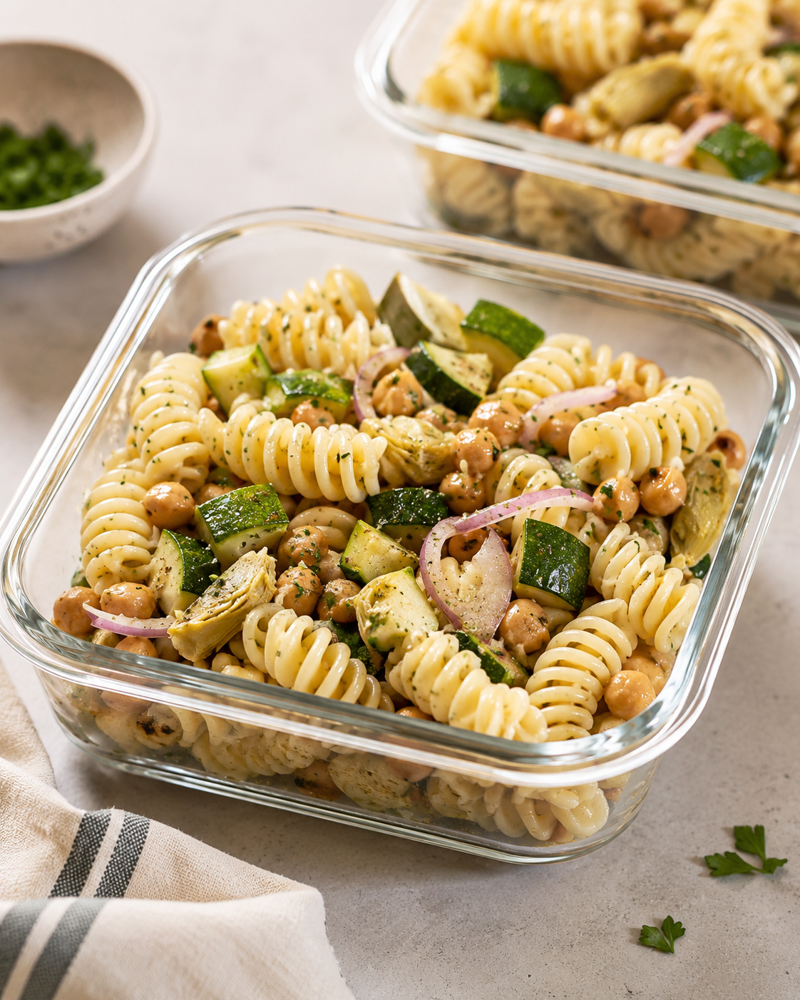
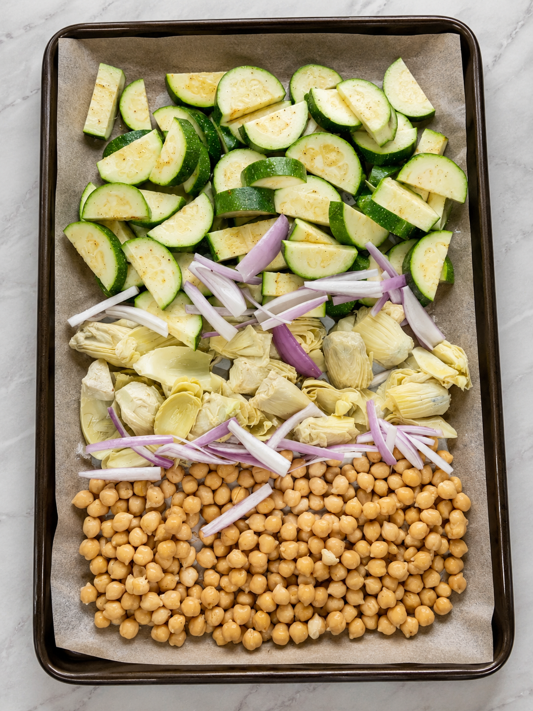
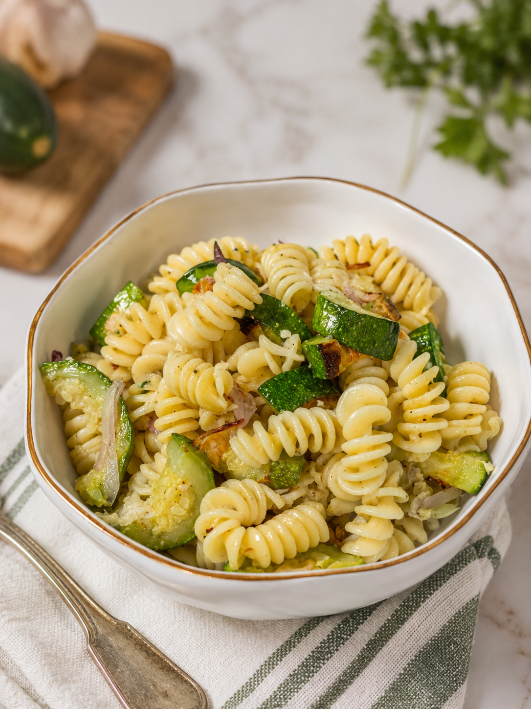

From the kitchen
Roasted zucchini, chickpea & artichoke pasta salad
Light but filling, and it holds up in the fridge better than most pasta salads have any right to

Why this one made the rotation
I wanted something that didn't feel heavy after a run but still left me full a few hours later, and this is what I landed on. Everything except the pasta roasts on one sheet pan, which keeps cleanup down to almost nothing. I made it with chickpeas for the protein and used a store-bought artichoke vinaigrette instead of mixing my own; there was no reason to overcomplicate a dressing that already tasted good out of the bottle.
Why it works for runners
- Roasted zucchini and artichokes bring fiber and volume without weighing the dish down
- Chickpeas add plant-based protein and carbs to help refill glycogen
- Easy to make ahead - it's actually better after an hour or two in the fridge
- Flexible protein, so it fits whatever's already in the kitchen
Ingredients (3-4 servings)
- 12 oz rotini or fusilli pasta
- 2 medium zucchini, sliced into half-moons
- 1 can (14 oz) chickpeas, drained and patted dry
- 1 jar (12 oz) marinated artichoke hearts, quartered
- ½ red onion, thinly sliced
- 2 Tbsp olive oil
- Salt, pepper, and garlic powder, to taste
- ⅓ to ½ cup store-bought artichoke vinaigrette (start light, add more to taste)
- Fresh parsley, chopped, for garnish
- Grated parmesan, optional
Swap it
This works just as well with grilled salmon, shredded rotisserie chicken, or cubed tofu in place of the chickpeas - drop it in at the end the same way, no other changes needed.
Instructions
- Preheat oven to 425°F (220°C) and cook the pasta according to package directions. Drain and set aside.
- Toss the zucchini and chickpeas with the olive oil, salt, pepper, and garlic powder. Spread on a sheet pan along with the quartered artichoke hearts and sliced red onion.
- Roast for 20 to 25 minutes, until the zucchini is lightly browned and the chickpeas have started to crisp at the edges.
- Combine the roasted vegetables and chickpeas with the cooked pasta in a large bowl.
- Add the artichoke vinaigrette a little at a time, tossing to coat, until it's dressed the way you like it.
- Top with chopped parsley and parmesan, if using. Serve warm or chilled.

A few notes from making this a bunch of times
- Pat the chickpeas dry first. Extra moisture is the difference between chickpeas that crisp up in the oven and ones that just steam.
- Don't overdress it early. The vegetables release a little liquid as they cool, so I usually hold back some vinaigrette and add it right before serving instead of all at once.
- It's better the next day. The flavors settle in overnight, so this is a good one to make the night before instead of right before eating it.
- The store-bought vinaigrette is doing real work here. A good marinated artichoke vinaigrette already has the acid, garlic, and herbs handled - no reason to reinvent it.
Approximate nutrition (per serving, with chickpeas)
- Calories: ~430
- Protein: 15g
- Carbohydrates: 62g
- Fat: 14g
- Fiber: 8g
Swapping in salmon or chicken will raise the protein total; tofu keeps it plant-based with a smaller bump.
Meal-prep tip
This holds up well for 3 to 4 days in the fridge. Pack it into containers once it's cooled, and give it a quick toss before eating since the pasta soaks up some of the dressing overnight.
